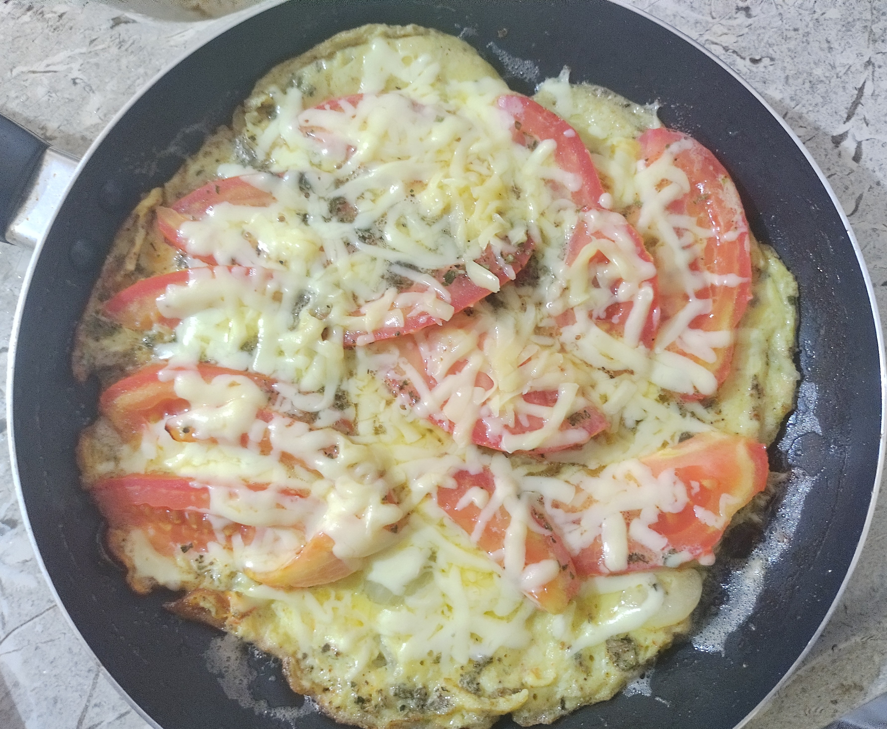

Receitas
Omelete

Ingredientes:
- 3 ovos
- 2 tomates
- 1/2 cebola
- Sal á gosto
- Pimenta á gosto
- 15g de Orégano
Modo de Preparo:
- Em uma tigela, bata os ovos e adicione o tempero (sal, pimenta, oregano).
- Corte a cebola e o tomate em tirinhas finas.
- Coloque 11/2 colher de manteiga em uma frigideira.
- Coloque a cebola e deixe deixe fritar.
- Adicione o tomate, um pedaço do lado do outro, formando um circulo, até cobrir a frigideira
- Espere o tomate cozinhar um pouco e adicione os ovos batidos.
- Tampe a frigideira e deixe por aproximadamente 5 minutos.
- Caso queira, adicione mussarela ou queijo ralado.